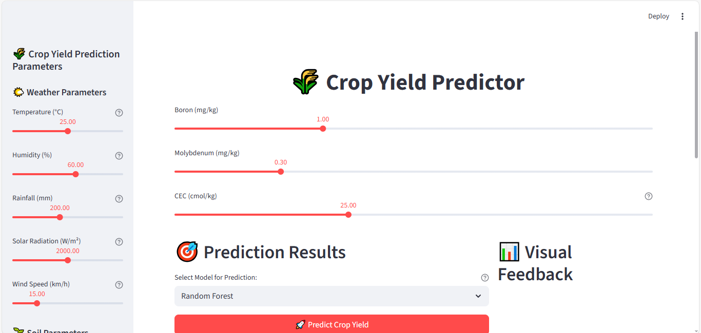

Application Demo

Interactive Main Interface
Real-time parameter adjustment and prediction display with user-friendly controls.

Prediction Results
Comprehensive yield predictions with status indicators and confidence intervals.

Visual Analytics
Interactive charts, gauges, and feature importance analysis for data insights.

Model Comparison
Side-by-side comparison of Random Forest and Linear Regression performance metrics.